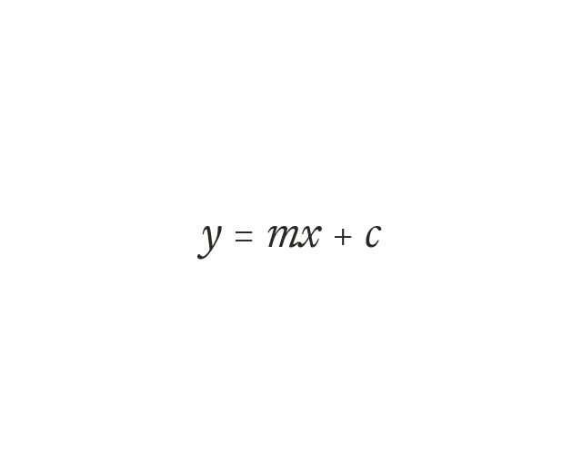
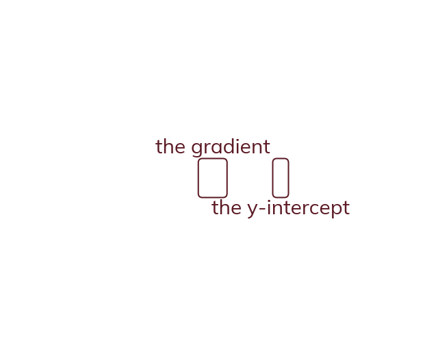

Why the form matters
Read and only from the form Rearrange any linear equation with inverse operations on both sides.
The gradient and intercept can only be read off directly once an equation is written in the form - reading them from any other arrangement risks reading the wrong numbers. Any linear equation can be rearranged into that form using the same inverse operations used to solve an equation: adding, subtracting, multiplying or dividing both sides by the same thing.